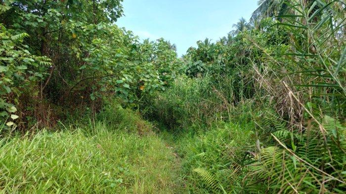

Work
Digital plant encyclopedia

Farming Roadmap Website
- 
Farm Management System

Farm Profile
Hello there! >_<
Greetings, thank you for visiting my web page. my name is Afif Firman Maulana, I'm a beginner at programming. I'm an active student in Politeknik Lamandau. I'm a part of The Student Activity Unit that involved in Information Technology field. I'm also have a hobby on gardening and painting, beside that I manage to have my own farm for side job. if there's anything please contact me!.
HTML
CSS
JAVASCRIPT
PHP
Digital plant encyclopedia
Farming Roadmap Website
Farm Management System
Farm Profile